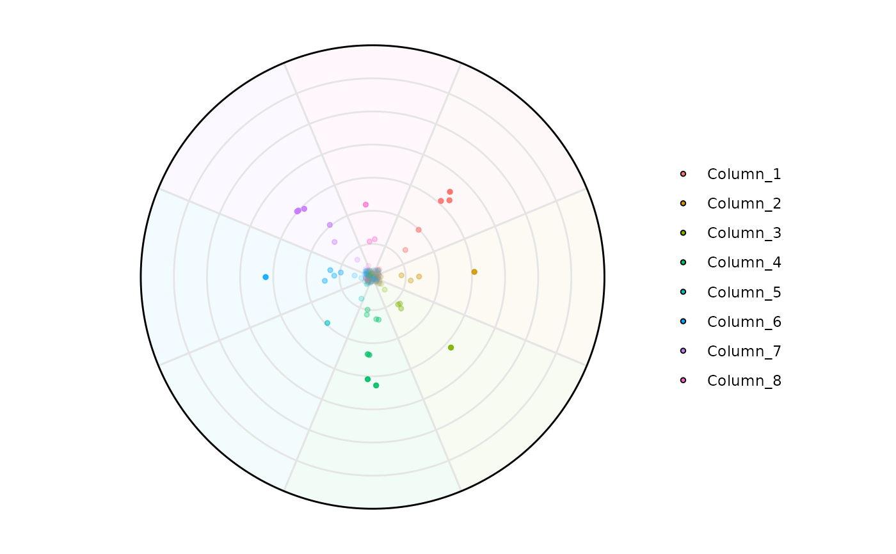
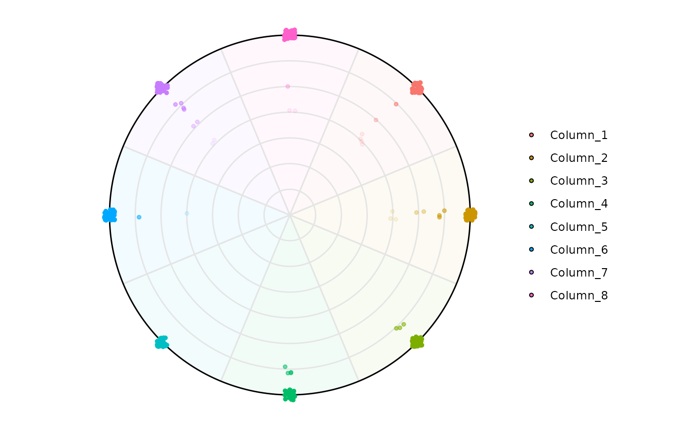
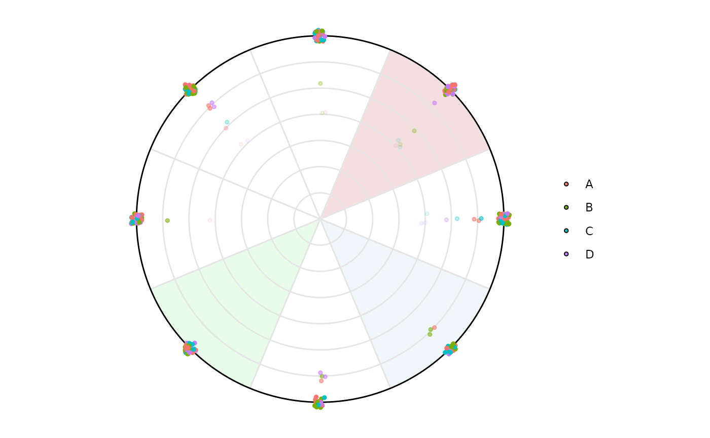
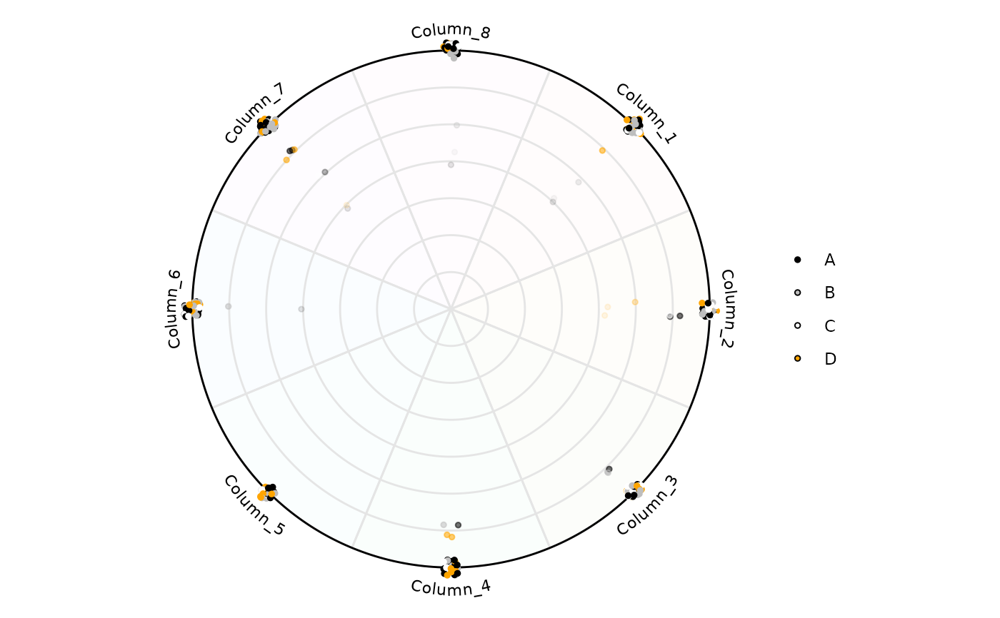
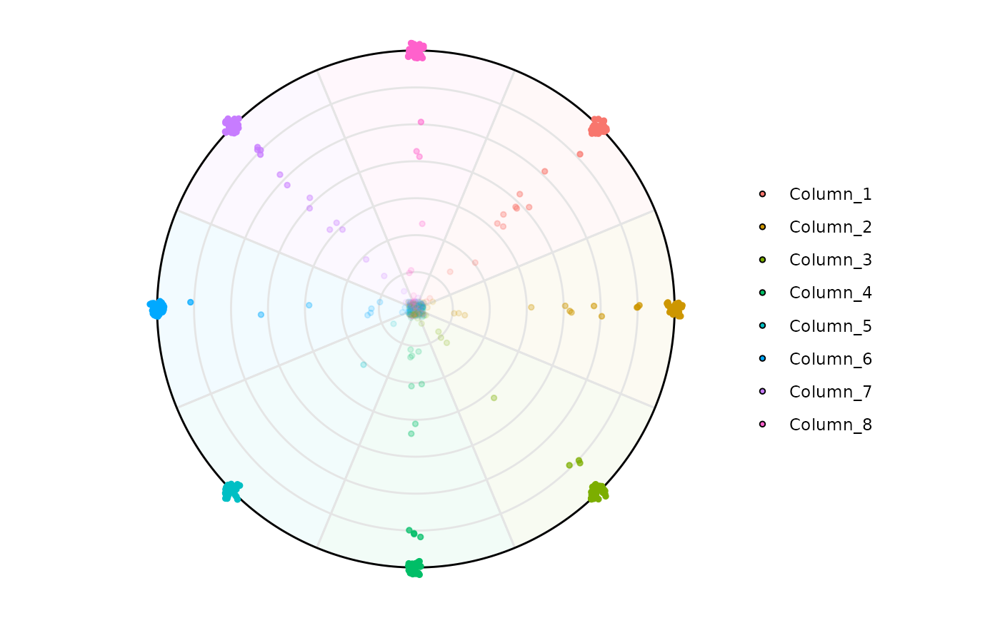
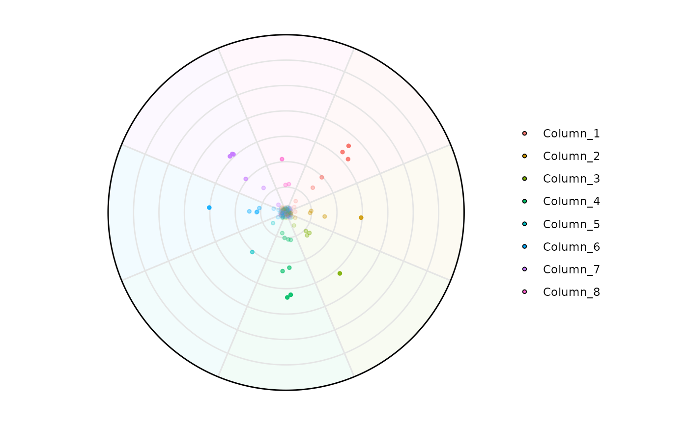
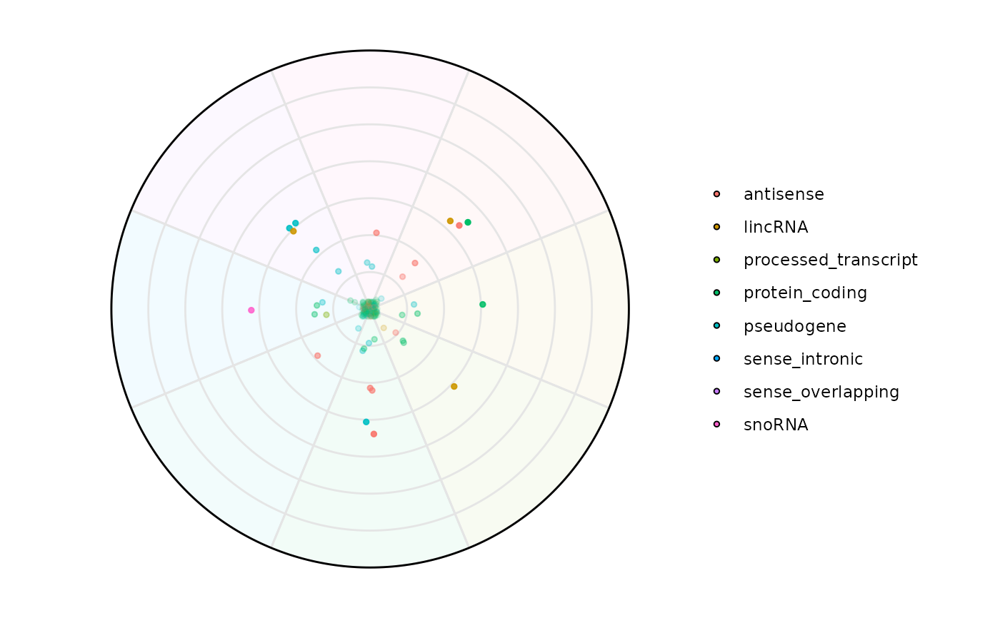

Produces a radial dominance plot in which each observation is located by:
Angle (θ) – the variable with the greatest value (ties broken at random).
Radius (r) – a monotone mapping of the row‐wise Shannon entropy: points with low entropy (one variable dominates) are near the edge; points with high entropy lie toward the centre.
The circle is partitioned into \(n\) coloured slices; optional factor information can colour/jitter points independently. Labels for each slice may be drawn as curved text on the circle or shown in a legend.
Usage
plot_circle(
x,
n,
column_variable_factor = NULL,
variables_highlight = NULL,
entropyrange = c(0, Inf),
magnituderange = c(0, Inf),
background_alpha_polygon = 0.05,
background_polygon = NULL,
background_na_polygon = "whitesmoke",
point_size = 1,
point_fill_colors = NULL,
point_fill_na_colors = "whitesmoke",
point_line_colors = NULL,
point_line_na_colors = "whitesmoke",
straight_points = TRUE,
line_col = "gray90",
out_line = "black",
label = "legend",
text_label_curve_size = 3,
assay_name = NULL,
output_table = TRUE
)Arguments
- x
A numeric
data.frame,matrix, or aSummarizedExperiment.- n
Integer (\(\ge 3\)). How many numeric variables to visualise. Must match
length(column_variable_factor)when supplied.- column_variable_factor
Character. Name of a column (or rowData column in a SummarizedExperiment) holding a categorical variable whose levels will colour the points. If
NULL(default) points are coloured by their dominant variable.- variables_highlight
Character vector naming which variables should receive curved text labels when
label = "curve". Defaults to all variables.- entropyrange, magnituderange
Numeric length-2 vectors. Rows falling outside either interval are excluded from the plot/data.
- background_alpha_polygon
Alpha level (0–1) for the coloured background slices.
- background_polygon
Character vector of slice fill colours; defaults to
scales::hue_pal()(n).background_na_polygonsets the colour for missing values.- background_na_polygon, point_fill_na_colors, point_line_na_colors
Sets the colour for missing values.
- point_size
Numeric; plotted point size.
- point_fill_colors, point_line_colors
Optional colour vectors for point fill / outline.
- straight_points
Logical. If TRUE points are plotted in a straight line.
- line_col
Colour for the inner grid / slice borders.
- out_line
Colour for the outermost circle.
- label
Either
"legend"(default) to list variables in a legend or"curve"to print them around the rim.- text_label_curve_size
Numeric font size for curved labels.
- assay_name
(SummarizedExperiment only) Which assay to use. Defaults to the first assay.
- output_table
Logical. Also return the underlying data frame?
Value
If output_table = TRUE a list with:
circle_plot— a ggplot object;data— the augmented data frame containing entropy, radius, (x,y) coordinates, dominant variable and optional factor.
Otherwise only the ggplot object is returned.
Examples
library(SummarizedExperiment)
library(airway)
library(tidyverse)
#> ── Attaching core tidyverse packages ──────────────────────── tidyverse 2.0.0 ──
#> ✔ dplyr 1.1.4 ✔ readr 2.1.5
#> ✔ forcats 1.0.0 ✔ stringr 1.5.2
#> ✔ ggplot2 3.5.2 ✔ tibble 3.3.0
#> ✔ lubridate 1.9.4 ✔ tidyr 1.3.1
#> ✔ purrr 1.1.0
#> ── Conflicts ────────────────────────────────────────── tidyverse_conflicts() ──
#> ✖ lubridate::%within%() masks IRanges::%within%()
#> ✖ ggplot2::Position() masks BiocGenerics::Position(), base::Position()
#> ✖ dplyr::collapse() masks IRanges::collapse()
#> ✖ dplyr::combine() masks Biobase::combine(), BiocGenerics::combine()
#> ✖ dplyr::count() masks matrixStats::count()
#> ✖ dplyr::desc() masks IRanges::desc()
#> ✖ tidyr::expand() masks S4Vectors::expand()
#> ✖ dplyr::filter() masks stats::filter()
#> ✖ dplyr::first() masks S4Vectors::first()
#> ✖ dplyr::lag() masks stats::lag()
#> ✖ purrr::reduce() masks GenomicRanges::reduce(), IRanges::reduce()
#> ✖ dplyr::rename() masks S4Vectors::rename()
#> ✖ lubridate::second() masks S4Vectors::second()
#> ✖ lubridate::second<-() masks S4Vectors::second<-()
#> ✖ dplyr::slice() masks IRanges::slice()
#> ℹ Use the conflicted package (<http://conflicted.r-lib.org/>) to force all conflicts to become errors
data('airway')
se = airway
# Only use a random subset of 1000 rows
set.seed(123)
idx <- sample(seq_len(nrow(se)), size = min(500, nrow(se)))
se <- se[idx, ]
## Normalize the data first using tpm_normalization
rowData(se)$gene_length = rowData(se)$gene_seq_end
- rowData(se)$gene_seq_start
#> [1] -88120993 -87282781 -12757325 -33023833 -89294212 -31676987
#> [7] -235459180 -17838649 -72042487 -10761177 -28941559 -142124137
#> [13] -179696098 -15144583 -23089888 -17188208 -72087382 -8941623
#> [19] -6128914 -16866251 -26868664 -105501459 -52684257 -21858909
#> [25] -16695645 -64550950 -27306656 -30492089 -47720564 -115140430
#> [31] -153507075 -207080964 -30709030 -49455025 -29811309 -188328957
#> [37] -129622944 -28825301 -73302061 -187079050 -28699806 -27995979
#> [43] -33888558 -132086509 -16309079 -138873841 -4542600 -41271078
#> [49] -90048800 -207565789 -7052671 -41757641 -70478577 -15074226
#> [55] -39874406 -61470716 -118124118 -54036874 -121829492 -71256158
#> [61] -29758816 -926175 -45229248 -47590165 -14683085 -16362309
#> [67] -70610204 -30615556 -63904180 -56364902 -114821440 -101462315
#> [73] -58563710 -9158422 -75955846 -75598948 -133781578 -63340667
#> [79] -111179442 -216669454 -14730915 -3411606 -38628029 -16799842
#> [85] -8972412 -168720862 -231658134 -216139715 -31654739 -30687978
#> [91] -32318107 -177389607 -48013379 -33211032 -228292 -50086067
#> [97] -23781213 -29687680 -53317443 -102040595 -67801364 -14531675
#> [103] -127291912 -21760811 -69825198 -39836850 -40110945 -49812902
#> [109] -11081835 -172582568 -77177778 -19239375 -23785369 -28962606
#> [115] -14988214 -31455615 -46122503 -58012493 -55954970 -71566815
#> [121] -12560575 -154795158 -32079238 -48876286 -44754135 -49328797
#> [127] -95857221 -47407633 -33545496 -7074112 -19985371 -29964122
#> [133] -176762649 -99425636 -10426888 -9860690 -141583849 -124165165
#> [139] -143087382 -194115550 -113886019 -88198893 -24882052 -35441923
#> [145] -133561448 -15978886 -109589700 -29065053 -13752832 -55179002
#> [151] -45364633 -100150641 -26388172 -31500028 -48046334 -141627157
#> [157] -4688580 -46642671 -36155221 -67024902 -38077680 -39745930
#> [163] -55888947 -27983346 -66792382 -19618273 -167584288 -108511433
#> [169] -25732010 -28654360 -175794949 -60679180 -111727037 -179224597
#> [175] -80703085 -49993772 -778745 -30030355 -47595218 -77228532
#> [181] -32336148 -23260304 -240547392 -38426265 -119205237 -21531151
#> [187] -20697561 -153786077 -208545257 -37820440 -126959811 -25662920
#> [193] -151883082 -86426478 -138710452 -32828155 -151673502 -51568647
#> [199] -157507131 -147688346 -64412212 -29364416 -32718320 -20033158
#> [205] -75142499 -31368479 -75560749 -93500171 -19901823 -71335563
#> [211] -103749270 -88963992 -45192393 -27391732 -6581407 -140762467
#> [217] -154549247 -17202383 -138269668 -33762485 -38270326 -9811163
#> [223] -58754814 -9376066 -47799469 -70070478 -45738661 -68266729
#> [229] -54864227 -28659681 -12111695 -46180719 -131904316 -56467862
#> [235] -143271839 -118894824 -129800674 -33144500 -155305059 -6600914
#> [241] -138818490 -64772226 -98969706 -32537632 -73248920 -149018956
#> [247] -150935507 -64813593 -159792310 -43328004 -25164349 -2615603
#> [253] -76414714 -45837859 -24204375 -109512836 -74955146 -11944905
#> [259] -68259872 -47172182 -19111897 -156543270 -24144509 -11998599
#> [265] -64781654 -31733961 -50937284 -27624416 -45385284 -168625959
#> [271] -30372300 -20232411 -99386837 -16501106 -9255104 -50080407
#> [277] -11910633 -75385754 -33316446 -33579823 -67707826 -109244179
#> [283] -53545427 -42668608 -9546789 -6111336 -71104590 -8754762
#> [289] -57846106 -73144658 -22007593 -91966408 -29587685 -48276432
#> [295] -35146491 -3182069 -100625085 -18485541 -52416758 -30344193
#> [301] -29412457 -73125647 -25181587 -58446019 -30708329 -85594708
#> [307] -132240835 -111322064 -133200348 -43578255 -30715542 -20433355
#> [313] -221056599 -50809639 -43490072 -3568514 -50648438 -30635612
#> [319] -26900135 -103715540 -69568260 -56720763 -74896728 -197627756
#> [325] -101768604 -174252846 -46126998 -112520900 -64557620 -90286573
#> [331] -23473154 -33084366 -12035890 -21487968 -203640690 -55155340
#> [337] -238090131 -139334549 -36817318 -159393903 -71991195 -49808176
#> [343] -5081181 -30359002 -41535013 -154697947 -12919021 -13777574
#> [349] -50452574 -150690028 -156822542 -87345503 -150954615 -44575673
#> [355] -115720487 -10596796 -31043216 -121133256 -145239296 -102113565
#> [361] -95860971 -3811317 -31941653 -8818975 -56223701 -144371846
#> [367] -40361098 -57832290 -3672580 -43124096 -28021006 -33179163
#> [373] -139085251 -32670370 -67726254 -155248063 -182584389 -183814852
#> [379] -36844393 -33571888 -29113866 -92029174 -216444130 -153769414
#> [385] -64552393 -90479081 -32272813 -31348188 -70748487 -934342
#> [391] -9570309 -40736224 -117085336 -74209946 -110608472 -4457959
#> [397] -22002902 -507299 -16227138 -32936437 -75548822 -131633547
#> [403] -111921078 -81573377 -77540700 -160320218 -117016266 -133320316
#> [409] -31679548 -7242183 -34960913 -129245835 -153777201 -119600293
#> [415] -122896963 -55609382 -63359095 -45579768 -70514471 -32969203
#> [421] -91260558 -41514164 -28829201 -71820807 -8019943 -47072628
#> [427] -46780316 -99324234 -17563020 -157180944 -11653304 -172514219
#> [433] -50968139 -52807744 -105104916 -30516378 -105750328 -34569648
#> [439] -44080952 -13378826 -72036639 -118507335 -36921319 -35732332
#> [445] -33393279 -131078616 -48634408 -4890449 -67840668 -17145878
#> [451] -52848310 -223741977 -45490715 -70196492 -56152975 -130581186
#> [457] -167148917 -99518147 -88400637 -29340936 -131492065 -151561893
#> [463] -199983817 -59664892 -80444832 -101768122 -89966927 -31581035
#> [469] -40013593 -130911350 -61211022 -100652475 -70385005 -49932658
#> [475] -148823508 -115624966 -17270258 -92100031 -107074907 -69441858
#> [481] -31616725 -75013517 -19949081 -11367144 -51601883 -39279811
#> [487] -46233789 -56214744 -97709633 -32554352 -207731519 -33704939
#> [493] -222909244 -93468277 -91624949 -99391474 -135243898 -70002351
#> [499] -86626576 -13374755
se = tpm_normalization(se, log_trans = TRUE, new_assay_name = 'tpm_norm')
# -------------------------------
# 1) Using a data.frame
# -------------------------------
df <- assay(se, 'tpm_norm') |> as.data.frame()
## For simplicity let's rename the columns
colnames(df) <- paste('Column_', 1:8, sep ='')
# Default
plot_circle(
x = df,
n = 8,
entropyrange = c(0, 3),
magnituderange = c(0, Inf),
label = 'legend', output_table = FALSE
)
# Filtering by entropy, 8 variables, max entropy value is log2(8)
plot_circle(
x = df,
n = 8,
entropyrange = c(2, 3),
magnituderange = c(0, Inf),
label = 'legend', output_table = FALSE
)

plot_circle(
x = df,
n = 8,
entropyrange = c(0, 2),
magnituderange = c(0, Inf),
label = 'legend', output_table = FALSE
)

# Aesthetics modification
plot_circle(
x = df,
n = 8,
entropyrange = c(0, 2),
magnituderange = c(0, Inf),
label = 'curve',
output_table = FALSE
)
# It is possible to highlight only a specific variable
plot_circle(
x = df,
n = 8,
entropyrange = c(0, 2),
magnituderange = c(0, Inf),
label = 'legend',
output_table = FALSE,
background_alpha_polygon = 0.2,
background_na_polygon = 'transparent',
background_polygon = c('Column_1' = 'indianred',
'Column_3' = 'lightblue',
'Column_5' = 'lightgreen'),
point_fill_colors = c('Column_1' = 'darkred',
'Column_3' = 'darkblue',
'Column_5' = 'darkgreen'),
point_line_colors = c('Column_1' = 'black',
'Column_3' = 'black',
'Column_5' = 'black')
)
# Let's create a factor column in our df
df$factor <- sample(c('A', 'B', 'C', 'D'), size = nrow(df), replace = TRUE)
# It is possible to visualize things by this specific factor column using
# column_variable_factor
plot_circle(
x = df,
n = 8,
column_variable_factor = 'factor',
entropyrange = c(0, 2),
magnituderange = c(0, Inf),
label = 'legend',
output_table = FALSE,
background_alpha_polygon = 0.2,
background_na_polygon = 'transparent',
background_polygon = c('Column_1' = 'indianred',
'Column_3' = 'lightblue',
'Column_5' = 'lightgreen')
)

# Colors can be modified
plot_circle(
x = df,
n = 8,
column_variable_factor = 'factor',
entropyrange = c(0, 2),
magnituderange = c(0, Inf),
label = 'curve',
output_table = FALSE,
background_alpha_polygon = 0.02,
background_na_polygon = 'transparent',
point_fill_colors = c('A' = 'black',
'B' = 'gray',
'C' = 'white',
'D' = 'orange'),
point_line_colors = c('A' = 'black',
'B' = 'gray',
'C' = 'white',
'D' = 'orange')
)

# Size of the points can be modified too
plot_circle(
x = df,
n = 8,
point_size = 2,
column_variable_factor = 'factor',
entropyrange = c(0, 2),
magnituderange = c(0, Inf),
label = 'curve',
output_table = FALSE,
background_alpha_polygon = 0.02,
background_na_polygon = 'transparent',
point_fill_colors = c('A' = 'black',
'B' = 'gray',
'C' = 'white',
'D' = 'orange'),
point_line_colors = c('A' = 'black',
'B' = 'gray',
'C' = 'white',
'D' = 'orange')
)
# Retrieving a dataframe with the results used for plotting,
# set output_table <- TRUE
plot <- plot_circle(
x = df,
n = 8,
point_size = 2,
column_variable_factor = 'factor',
entropyrange = c(0, 2),
magnituderange = c(0, Inf),
label = 'curve',
output_table = TRUE,
background_alpha_polygon = 0.02,
background_na_polygon = 'transparent',
point_fill_colors = c('A' = 'black',
'B' = 'gray',
'C' = 'white',
'D' = 'orange'),
point_line_colors = c('A' = 'black',
'B' = 'gray',
'C' = 'white',
'D' = 'orange')
)
# The first object is the plot
plot[[1]]
# The second the dataframe with information for each row, including
# Entropy and the variable that dominates that particular observation.
head(plot[[2]])
#> Factor Entropy col rad deg x
#> ENSG00000260166 C 0.0000000 Column_7 100.00000 -3.9269908 -70.71068
#> ENSG00000266931 A 0.0000000 Column_5 100.00000 -2.3561945 -70.71068
#> ENSG00000267583 D 0.0000000 Column_2 100.00000 0.0000000 100.00000
#> ENSG00000227581 B 0.9820371 Column_6 86.06782 -3.1415927 -86.06782
#> ENSG00000227317 A 0.0000000 Column_1 100.00000 0.7853982 70.71068
#> ENSG00000236863 A 0.0000000 Column_5 100.00000 -2.3561945 -70.71068
#> y labels rand_deg alpha
#> ENSG00000260166 7.071068e+01 Column_7 -3.88335759 1.0000000
#> ENSG00000266931 -7.071068e+01 Column_5 -2.37073890 1.0000000
#> ENSG00000267583 0.000000e+00 Column_2 -0.01454441 1.0000000
#> ENSG00000227581 -1.054027e-14 Column_6 -3.15613706 0.8772454
#> ENSG00000227317 7.071068e+01 Column_1 0.76115748 1.0000000
#> ENSG00000236863 -7.071068e+01 Column_5 -2.35134635 1.0000000
# -------------------------------
# 1) Using a SummarizedExperiment
# -------------------------------
# Changing column names
colnames(se) <- paste('Column_', 1:8, sep ='')
# Default
plot_circle(
x = se,
n = 8,
entropyrange = c(0, 3),
magnituderange = c(0, Inf),
label = 'legend',
output_table = FALSE,
assay_name = 'tpm_norm'
)

# Filtering High Entropy genes
plot_circle(
x = se,
n = 8,
entropyrange = c(0, 1.5),
magnituderange = c(0, Inf),
label = 'legend',
output_table = FALSE,
assay_name = 'tpm_norm'
)
# Filtering Low Entropy genes
plot_circle(
x = se,
n = 8,
entropyrange = c(2, 3),
magnituderange = c(0, Inf),
label = 'legend',
output_table = FALSE,
assay_name = 'tpm_norm'
)

# Using a character column from rowData
plot_circle(
x = se,
n = 8,
column_variable_factor = 'gene_biotype',
entropyrange = c(2,3),
magnituderange = c(0, Inf),
label = 'legend',
output_table = FALSE,
assay_name = 'tpm_norm'
)
#> Error in h(simpleError(msg, call)): error in evaluating the argument 'i' in selecting a method for function '[': error in evaluating the argument 'x' in selecting a method for function 'colnames': error in evaluating the argument 'x' in selecting a method for function 'rowData': object 'se' not found
plot_circle(
x = se,
n = 8,
column_variable_factor = 'gene_biotype',
point_size = 3,
entropyrange = c(0,1.5),
magnituderange = c(2, Inf),
label = 'legend',
output_table = FALSE,
assay_name = 'tpm_norm',
)
#> Error in h(simpleError(msg, call)): error in evaluating the argument 'i' in selecting a method for function '[': error in evaluating the argument 'x' in selecting a method for function 'colnames': error in evaluating the argument 'x' in selecting a method for function 'rowData': object 'se' not found
# Highlighting only a class of interest
plot_circle(
x = se,
n = 8,
column_variable_factor = 'gene_biotype',
point_size = 3,
entropyrange = c(0,1.5),
magnituderange = c(2, Inf),
label = 'legend',
output_table = FALSE,
assay_name = 'tpm_norm',
point_fill_colors = c('miRNA' = 'orange'),
point_line_colors = c('miRNA' = 'orange')
)
#> Error in h(simpleError(msg, call)): error in evaluating the argument 'i' in selecting a method for function '[': error in evaluating the argument 'x' in selecting a method for function 'colnames': error in evaluating the argument 'x' in selecting a method for function 'rowData': object 'se' not found
# Retrieving a dataframe with the results used for plotting,
# set output_table <- TRUE
plot <- plot_circle(
x = se,
n = 8,
column_variable_factor = 'gene_biotype',
point_size = 3,
entropyrange = c(0,1.5),
magnituderange = c(2, Inf),
label = 'legend',
output_table = TRUE,
assay_name = 'tpm_norm',
point_fill_colors = c('miRNA' = 'orange'),
point_line_colors = c('miRNA' = 'orange')
)
#> Error in h(simpleError(msg, call)): error in evaluating the argument 'i' in selecting a method for function '[': error in evaluating the argument 'x' in selecting a method for function 'colnames': error in evaluating the argument 'x' in selecting a method for function 'rowData': object 'se' not found
# It returns a list.
# The first object is the plot
plot[[1]]

# The second the dataframe with information for each row, including
# Entropy and the variable that dominates that particular observation.
head(plot[[2]])
#> Factor Entropy col rad deg x
#> ENSG00000260166 C 0.0000000 Column_7 100.00000 -3.9269908 -70.71068
#> ENSG00000266931 A 0.0000000 Column_5 100.00000 -2.3561945 -70.71068
#> ENSG00000267583 D 0.0000000 Column_2 100.00000 0.0000000 100.00000
#> ENSG00000227581 B 0.9820371 Column_6 86.06782 -3.1415927 -86.06782
#> ENSG00000227317 A 0.0000000 Column_1 100.00000 0.7853982 70.71068
#> ENSG00000236863 A 0.0000000 Column_5 100.00000 -2.3561945 -70.71068
#> y labels rand_deg alpha
#> ENSG00000260166 7.071068e+01 Column_7 -3.88335759 1.0000000
#> ENSG00000266931 -7.071068e+01 Column_5 -2.37073890 1.0000000
#> ENSG00000267583 0.000000e+00 Column_2 -0.01454441 1.0000000
#> ENSG00000227581 -1.054027e-14 Column_6 -3.15613706 0.8772454
#> ENSG00000227317 7.071068e+01 Column_1 0.76115748 1.0000000
#> ENSG00000236863 -7.071068e+01 Column_5 -2.35134635 1.0000000